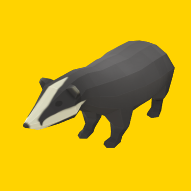
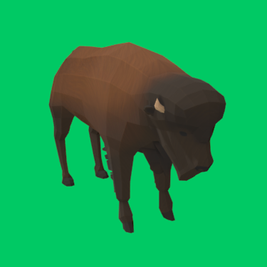
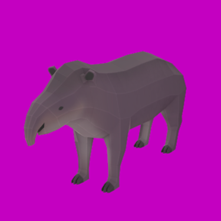
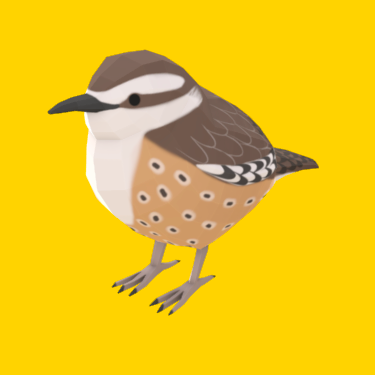

Badgers are short-legged omnivores in the family Mustelidae, which also includes the otters, polecats, weasels, and wolverines. They belong to the caniform suborder of carnivoran mammals.
 badger.gltfBison are large, even-toed ungulates in the genus Bison within the subfamily Bovinae.
 bison.gltfA tapir is a large, herbivorous mammal, similar in shape to a pig, with a short, prehensile nose trunk. Tapirs inhabit jungle and forest regions of South America, Central America, and Southeastern Asia.
 tapir.gltfThe cactus wren (Campylorhynchus brunneicapillus) is a species of wren that is native to the southwestern United States southwards to central Mexico.
 cactus-wren.gltf